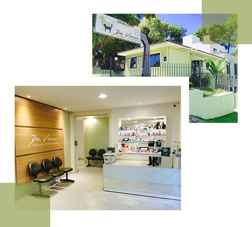
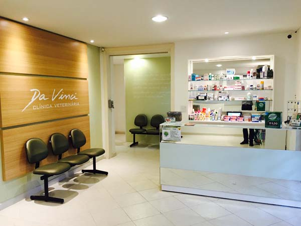
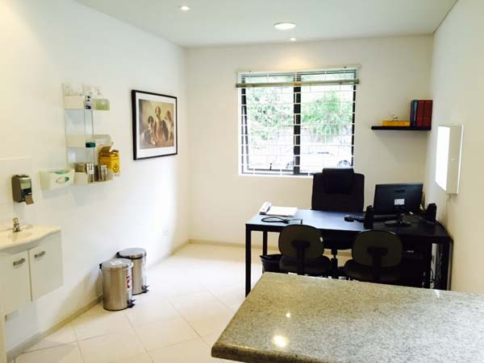
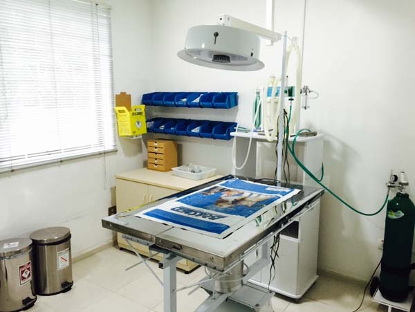
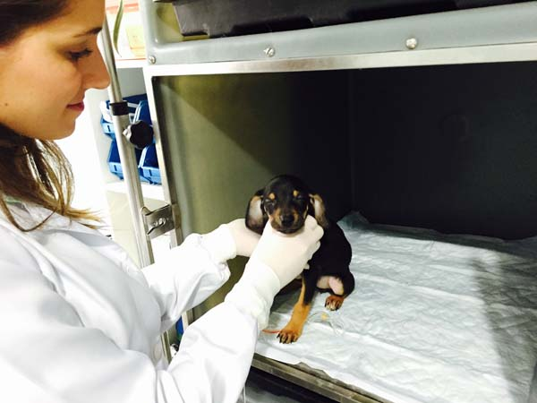
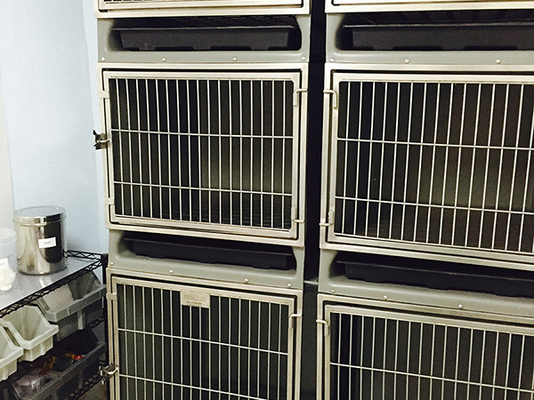
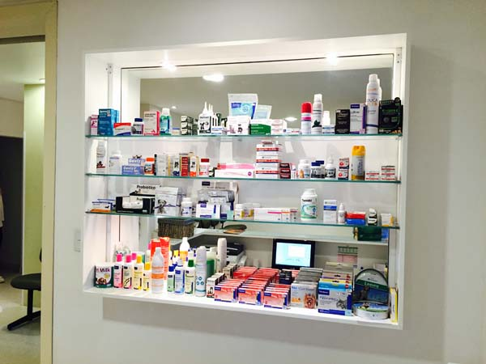
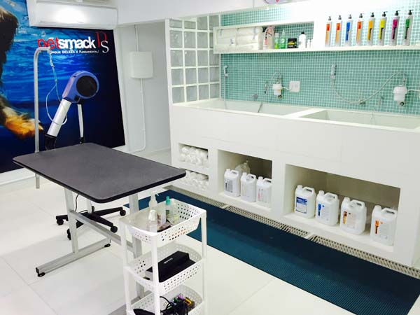
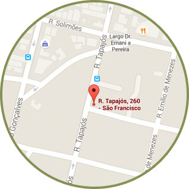

É uma emergência
Acidente, mal súbito, sangramento, dificuldade para respirar ou qualquer sinal grave. Não espere — ligue e já venha para a clínica.
📞 Ligar agora
Pronto atendimento, internação e especialistas para cães e gatos na Rua Tapajós, 260, São Francisco, Curitiba. Um só número para emergência, consulta ou internação.
Escolha a situação do seu animal e vá direto ao contato certo. Emergência tem prioridade absoluta.
Acidente, mal súbito, sangramento, dificuldade para respirar ou qualquer sinal grave. Não espere — ligue e já venha para a clínica.
📞 Ligar agoraCheck-up de rotina, acompanhamento ou encaminhamento para uma das 13 especialidades da clínica — de cardiologia a oncologia.
Ver especialidadesAcompanhamento contínuo 24h em ambiente climatizado, com alimentação adequada durante todo o período de internação.
Saiba como funcionaBanho e tosa climatizado, com hora marcada — e serviço de leva e traz se você não puder trazer seu pet.
Ver banho e tosaA Da Vinci possui um ambiente diferenciado e uma equipe que vivencia uma nova consciência na forma de tratar os animais.
Emergência atendida a qualquer hora, todos os dias da semana, inclusive feriados.
Equipe dedicada às 13 especialidades e 6 tipos de cirurgia oferecidas pela clínica.
Centro cirúrgico, farmácia, internação, isolamento e centro de imunização próprios.
Ambiente monitorado para acompanhar a segurança do seu pet durante a permanência.

Fotos reais do dia a dia da Da Vinci — recepção, centro cirúrgico, internação, isolamento e farmácia.






Diversos tratamentos específicos para o bem-estar do seu animal de estimação.
O seu melhor amigo nas mãos dos mais qualificados profissionais.
Veterinários acompanham o estado de saúde do seu pet durante 24 horas em um ambiente limpo, confortável e climatizado, com alimentação de qualidade durante todo o período de internação ou isolamento.
"Meu amigão Luke foi tratado como um rei. Equipe ultra carinhosa, paciente e profissional. Agora o garoto está bonito e cheirosão."
Everton Facundes Telles
"Minha gatinha encontra na Da Vinci o carinho de uma equipe selecionada, com profissionais que sempre inovam. É tecnologia avançada em todos os segmentos. A Da Vinci traz muita tranquilidade a pessoas como eu, que amam seus bichinhos."
Fabiana Almeida Gomes de Sá

Higiene também é saúde. O ambiente é climatizado, as toalhas são individuais e esterilizadas, e a água tem temperatura regulável — quentinha no inverno, refrescante no verão.
Não pode trazer seu pet? O serviço Leva e Traz busca e devolve seu animal em um veículo equipado e seguro.
Rua Tapajós, 260 — São Francisco/Mercês, Curitiba/PR
Ver rota no Google Maps
· Estacionamento próprio
